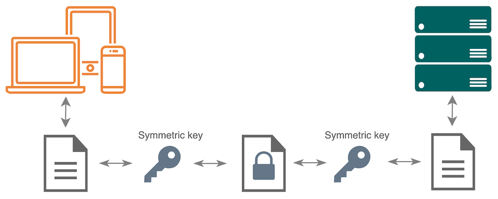

The Transport Layer Security (TLS) protocol is a technology designed to protect communication over computer networks. It helps secure the information passed between various network entities, for example, through websites, client-server and web applications, email, instant messaging, voice-over IP, and so on.
TLS is also referred to by the name of its older version, Secure Socket Layer (SSL).
Communication security is essential for organizations that work with sensitive information like personal, business, financial data, and so on. It is in their best interest to ensure that no human or machine can read or change the data they send and receive, even if their network traffic is compromised. They also need to provide identity for the server domains that host their websites and applications. To cover these requirements, TLS offers the following:
The TLS protocol is developed and maintained by the Internet Engineering Task Force (IETF) organization that defines best practices in network security and publishes them in documents called RFC (or Request for Comment). You can find the full specification of TLS 1.3 in RFC 8446 (https://www.rfc-editor.org/rfc/rfc8446).
Let’s look into the main ideas, components, and mechanisms behind TLS 1.3, the most recent and secure version of the protocol.
Before two computers start exchanging information, they need to establish a connection and verify they can communicate securely. To accommodate that, the TLS protocol includes two phases:
The computers that exchange information over a TLS connection are usually referred to as client and server, and client is the computer that initiates communication.
TLS is a cryptographic protocol. It uses secure algorithms to exchange cryptographic keys, and with those keys, it transforms readable data into an unreadable format to protect it from unauthorized access and tampering. These processes involve several types of cryptography.
Asymmetric cryptography, or public key cryptography, is based on two mathematically related keys – a private and a public key. The public key can be shared with others while the private key is always kept a secret. TLS uses asymmetric keys in the handshake phase for the following purposes:
In the course of the Diffie-Hellman key exchange algorithm, computers exchange their public keys, and then each of them generates the same shared secret value from its private key and the public key of the other computer.
Computers authenticate themselves with the help of digital signatures generated with their private keys. They also distribute their public keys to other entities. Public keys are used to verify digital signatures created with the related private keys. In this case, private keys encrypt data and public keys decrypt it.
Symmetric cryptography handles encryption and decryption with a single key or set of keys. TLS uses it in the record phase to protect communication session traffic. This cryptography type is efficient to process large amounts of data, and it is safe as long as only the sender and receiver have the symmetric key that encrypts the data in transfer.

Hashing cryptography transforms data of any size into a fixed-length string of characters, also known as a hash value. This value is unique to the data it represents; even a slight change results in a different string of characters. Hashing also works one way: it is easy to calculate a hash value but it is almost impossible to reverse it to the original state.
TLS uses hashing for authentication and verification of data integrity:
Digital signatures combine hashing and asymmetric cryptography. To create a digital signature for data, a computer generates a hash value of this data and encrypts it with its private key. Then, it sends the signature along with the signed data. Knowing the sender’s public key, the receiving computer can decrypt the signature and verify if the hash value matches the hash value it generated for the received data.
In TLS 1.3, digital signatures validate SSL/TLS certificates, authenticate the server (and, optionally, the client), and verify the handshake integrity.
TLS mechanisms are set in motion by cryptographic algorithms and protocols that work together to provide a secure key exchange, strong encryption, integrity checks, and trustworthy authentication. Let’s examine each component of the TLS protocol individually.
To exchange information, two computers must have the same symmetric encryption keys. They cannot share them openly over a network because a third party can intercept the keys and the data they encrypt if network traffic is compromised. To solve this problem, TLS uses secure key exchange algorithms.
For the initial connection between computers, TLS uses the Diffie-Hellman algorithm. It enables two computers to separately generate the same secret keys using the unencrypted data and public keys they exchange on connection. TLS supports several variations of the Diffie-Hellman protocol, each having different calculation rules and key strength. The computer that initiates the session selects the Diffie-Hellman variation to use based on its settings, and the other computer can accept it or suggest a more appropriate variation.
The public-private key pairs and other data used for generating secret keys are ephemeral, which means they are only valid for one key exchange. This feature is called perfect forward secrecy. It ensures that even if intruders record encrypted sessions between computers and then gain access to the secret keys of a session, only one session is affected by the breach, and all previous session data are safe.
For resuming previous sessions, TLS supports the Pre-Shared Key (PSK) algorithm. Computers can use it if they have established a secure connection before and store its secret keys and their identities. This protocol takes less time and computing resources but is less secure as it involves previously shared keys.
It is also possible to use PSK with the Diffie-Hellman algorithm to provide perfect forward secrecy.
You can set up your computer to support all the three algorithms or only use more secure options.
Computers know how to work with traffic exchanged over TLS connections because they use the same cryptographic algorithms and protocols called cipher suites. TLS 1.3 supports the following cipher suites:
They are normally embedded in computer operating systems; if the required suites are missing, you can add them manually. You can also set them in order by preference.
When two computers connect, they compare the cipher suites they have installed and choose one to use for the session. The selected suite defines the bulk encryption method for the record phase and the message authentication code (MAC) and hashing algorithms they will use to ensure data integrity.
Digital signatures are part of the TLS authentication processes. They involve two algorithms: one for hashing and another for generating a public-private key pair. Computers negotiate them during the handshake as signature algorithms.
TLS 1.3 supports the SHA256, SHA384, and SHA512 hashing algorithms for use in digital signatures, while the following algorithms are valid for public key generation:
The former two algorithms are more common, while the latter ones generate digital signatures that work faster.
It is possible to use different signature algorithms for the SSL/TLS certificate and the handshake signature. For example, a certificate may have an RSASSA-PKCS1 digital signature and include an ECDSA public key of the server. You define the public key algorithm your server will use for the handshake signature when creating a certificate signing request (CSR). When sending the CSR to a certificate authority, you specify the signature algorithm you prefer for your SSL/TLS certificate.
Computers confirm their identities with the help of SSL/TLS certificates issued by trusted certificate authorities (CA). Why does TLS need them? Before issuing a digital certificate, a CA verifies the person or organization that requests the certificate controls the computer domain name stated in the request. If a fraudulent computer attempts to impersonate a domain to steal its traffic, it won't have a valid certificate, so TLS will detect the discrepancy and interrupt the connection.
To confirm the authenticity of SSL/TLS certificates, CAs digitally sign them with their private keys. The public keys of trusted certificate authorities are included in computer operating systems and web browsers. A computer that receives a signed SSL/TLS certificate can decrypt its signature and verify the certificate is authentic so it can also trust the server identity.
In fact, there are numerous certificate authorities, and they form a hierarchy with Root CAs at the top, Intermediate CAs in the middle, and Issuing CAs at the bottom. Issuing CAs sign user certificates while they also have their own certificates signed by Intermediate CAs, which in turn have their certificates signed with Root CA private keys. This system is called a chain of trust.
Operation systems and web browsers only include the public keys of Root CAs. When a computer receives an SSL/TLS certificate, it verifies the whole chain of trust and accepts the certificate if it can trace the chain back to the Root CA signature.
Below is the basic lifecycle of an SSL/TLS certificate:
First, you use the functionality embedded in your server operating system to generate a Certificate Signing Request (CSR) and send it to a certificate authority.
When you create a CSR, you supply your server domain name, and optionally, the details about your organization in it. Your server also generates a pair of encryption keys and includes the public key in the CSR.
The details you provide in the CSR depend on the type of certificate for which you want to apply.
In most cases, only the server is required to provide its SSL/TLS certificate. However, in certain implementations, it may also request the SSL/TLS certificate from the client to verify its identity. This method is called Two-Way SSL or Mutual Authentication and it is used for additional security.
Computers communicate by sending each other messages. The handshake part of the TLS protocol provides them with the guidelines on which messages to send, what to include in them, and how to process them. The initial handshake between a client and a server takes one round trip time (1-RTT) and works in the following way:
When the client connects to the server, it generates a one-time public-private key pair and a nonce value and sends the ClientHello message.
ClientHello includes the following data:
The client also derives Early Secret keys from the data in the ClientHello message. It will store and use these keys for future connections with the same server.
The server confirms whether it supports the key exchange and signature algorithms suggested in the ClientHello message and chooses an appropriate cipher suite. If the server accepts the key exchange, it uses it to generate a one-time public-private key pair of its own. It also generates a nonce value (server random).
In the cases when the server does not support the key exchange used by the client, it suggests an alternative in the HelloRetryRequest. If the client accepts the suggestion, it regenerates the key according to the new algorithm and re-sends the ClientHello message with the new key to the server.
The key exchange algorithm works in the way that cross-mixing two public-private key pairs results in the same value on both sides. The server now has the public key of the client and its own private key, so it calculates the Shared Secret value.
Shared Secret = Private key + Public key of the other computer
At this stage, the server has part of the ServerHello message that includes:
All messages up to this point a called a Handshake Context. The server calculates the Handshake Context hash value using the hashing algorithm from the selected cipher suite. Then, it derives the symmetric Handshake Secret keys from the Shared Secret and the Handshake Context hash value.
Handshake Secret keys = Shared Secret + Handshake Context hash
The server uses the Handshake Secret keys to encrypt the rest of the ServerHello message that includes the following server authentication messages:
optionally, the CertificateRequest message (if Mutual Authentication is required),
the Certificate message including the SSL/TLS certificate of the server,
the CertificateVerify message with the digital signature over the handshake messages up to CertificateRequest; it is based on one of the signature algorithms the client specified as supported in the ClientHello message.
If the client did not specify the public key algorithm of the server as supported in one of the signature algorithms, the connection will be interrupted.
the Finished message that includes the hash-based message authentication code (HMAC) of all messages up to this point (ClientHello…CertificateVerify); the HMAC is generated with the Handshake Secret keys.
Now the server generates the hash value of all the messages from the ClientHello to the Finished message and uses it to derive the Master Secret keys to use for bulk encryption.
Master Secret keys = Shared Secret + ClientHello…Finished message hash
The client uses the public key of the server and its own private key to calculate the Shared Secret. Then, it generates the Handshake Secret keys using the same components as the server.
If the message exchange works as expected, the client receives the same Handshake Secret keys and can decrypt the SSL/TLS certificate and the handshake signature to authenticate the server. If Mutual Authentication is required, it also sends the following client authentication messages:
To finalize the handshake phase, the client creates its HMAC of the entire handshake and sends it to the server in the Finished message.
Then, it calculates the hash value of all messages from ClientHello to the Finished message of the server and derives the Master Secret keys from it and the Shared Secret.
As a result of the successful handshake, the device and the server start to exchange their data and use the Master Secret keys to encrypt it.
You can review the summarized flow of the basic full handshake in the graphic below. Optional elements are marked with an asterisk (*).
The HMAC values that the client and the server exchange during the handshake bind their identities to the secret keys they established. These pre-shared key identities allow them to resume communication sessions without going through the whole handshake process. In this case, computers use the Pre-Shared Key (PSK) or PSK with the Diffie-Hellman exchange algorithm. Pre-shared keys bootstrap the cryptographic state of the previous handshake, so the client and the server do not need to negotiate the cipher suites and exchange the authentication messages again.
Computers can also use the PSK algorithm if they have pre-shared keys distributed out of band, through a secure channel other than the TLS handshake.
Session resumption allows for a faster connection, however, it is less secure because the keys that encrypt the data in the session are not ephemeral. To provide forward secrecy, you can set up the client to send its public key in addition to the PSK in the resumption ClientHello message. This approach lets the server and the client fall back to the full handshake and generate a new Shared Secret and secret keys for the session if needed.
One more way to secure the PSK handshake and protect it from replay attacks is to set up the client to send a nonce value in ClientHello. The server should also be configured to verify that the nonce it receives has not been received before and to interrupt the connection if it receives a duplicate ClientHello.
The client can also send its data to the server in the ClientHello message, which reduces the round trip times of the handshake to zero (0-RTT). The client encrypts this data with the Early Secret keys that it derived during the previous handshake. Since these keys are not ephemeral, early data should not be sensitive.
You can review the summarized flow of the resumption and 0-RTT handshake in the graphic below. Optional elements are marked with an asterisk (*).
In the TLS record phase, computers exchange traffic in equal-sized chunks called records. To secure the process, they use encryption, authentication, and integrity check algorithms based on the cipher suite they chose during the handshake and adhere to the Authenticated Encryption with Associated Data (AEAD) standard.
A record consists of a header and a payload. The payload includes the actual data encrypted with the shared Master Secret keys and authenticated with hash-based message authentication codes (HMAC), while the header is sent in the open and includes the associated metadata.
For each record, a computer also generates a nonce value known as an initialization vector (IV). It uses the IV value in conjunction with the Master Secret keys to encrypt the record payload and generate a message authentication code (MAC) for it. It also includes IV in the header so that the other computer can use it for decryption and MAC verification.
Before sending a record out, a computer does the following:
In this scheme, the record is encrypted with symmetric keys, authenticated with an HMAC, and it also includes associated unencrypted data in the header.
When the other computer receives the record, it runs the following procedures:
If the values match, it can be sure that it received the record from the intended sender, and that the data in the payload was not changed during the transmission. Associated data in the header and IV help to verify that the record is not duplicate, which means there is no intruder trying to replay an old message.